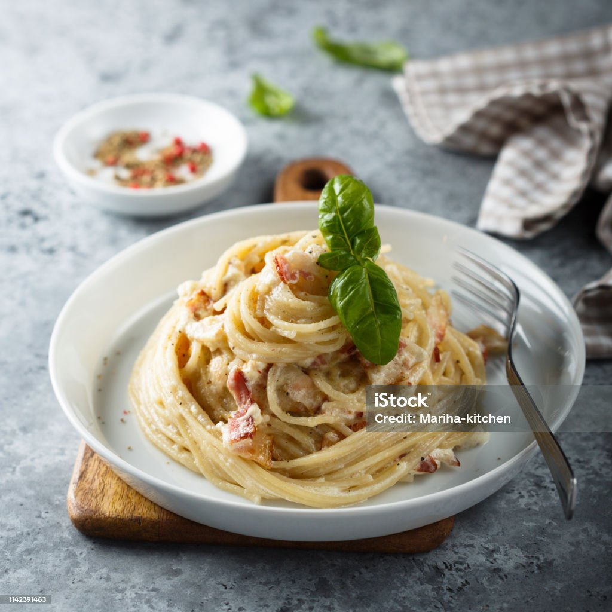

Carbonara

An italian classic, and a great beginner dish to prepare. Savory and hearty, a surefire classic that impresses.
Ingredients
- pasta
- parmesan cheese
- romano cheese
- eggs
- pasta water
- bacon or guancalie
Steps
boil pasta in large pot
in a seperate pan, start cooking your protein
Turn off burner for protien when cooked to desired doneness
In seperate bowl, add both cheeses, and 4 egg yolks, and 2 egg whites
combine, the mixture should have a nice runny consistency
add pasta to protein pan
add cheese and egg mixture with additional pasta water to make sauce
serve